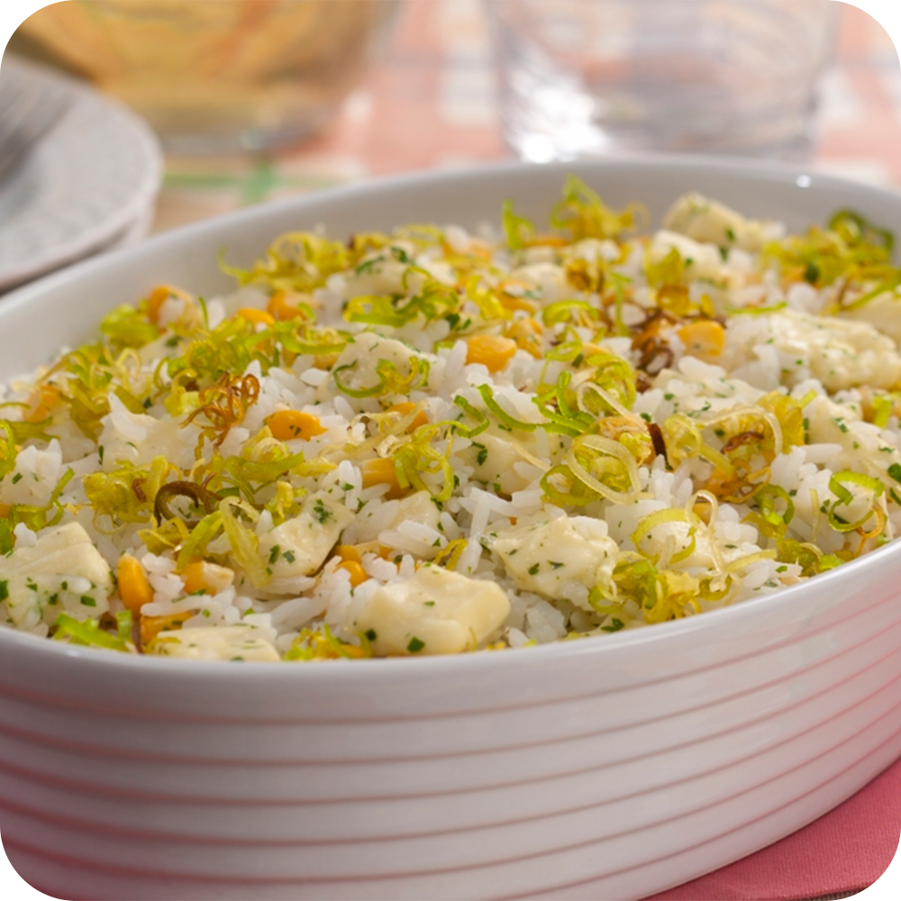
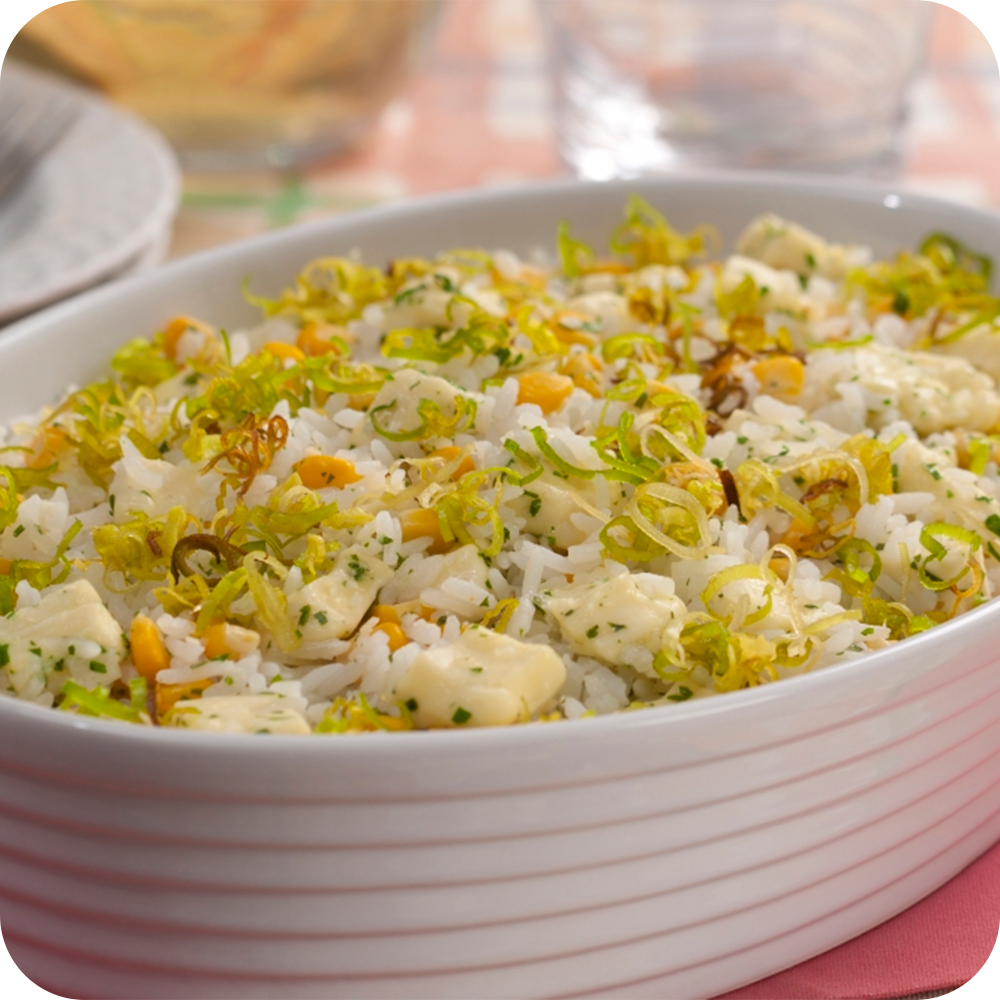

Arroz com Alho Poró e Milho
RECEITA
INGREDIENTES
- 2 colheres (sopa) de óleo
- 1 cebola pequena ralada
- 2 xícaras (chá) de alho-poró cortado em rodelas finas (140 g)
- 1 xícara (chá) de arroz cru
- 2 e meia xícaras (chá) de água fervente (500 ml)
- 1 sachê de Tempero de sua escolha
- 1 pitada sal
- 1 lata de milho verde em conserva, escorrido
- 1 xícara (chá) de queijo minas fresco cortado em cubos pequenos
MODO DE PREPARO
Em uma panela, aqueça o óleo em fogo alto e refogue a cebola
e o alho-poró até murcharem. Junte o arroz e refogue rapidamente.
Acrescente a água, o tempero e o sal, e cozinhe em fogo médio,
com a panela tampada, por 15 minutos, ou até que o arroz esteja macio
e o líquido tenha secado. Adicione o milho e o queijo fresco, misture
e sirva em seguida.
 
